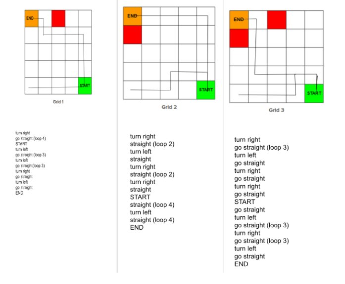
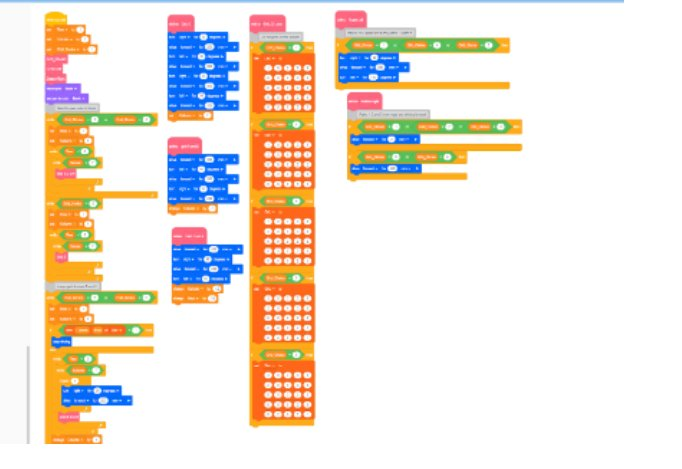
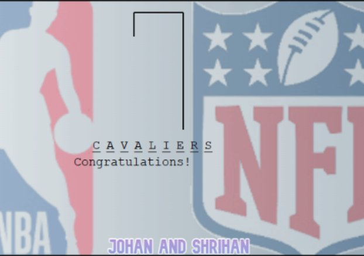
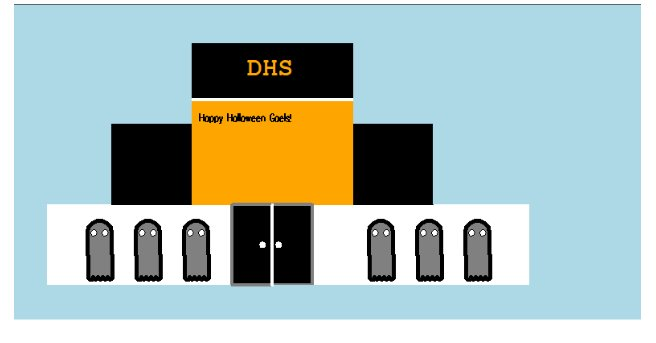
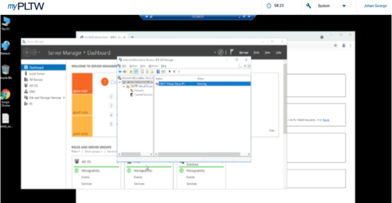
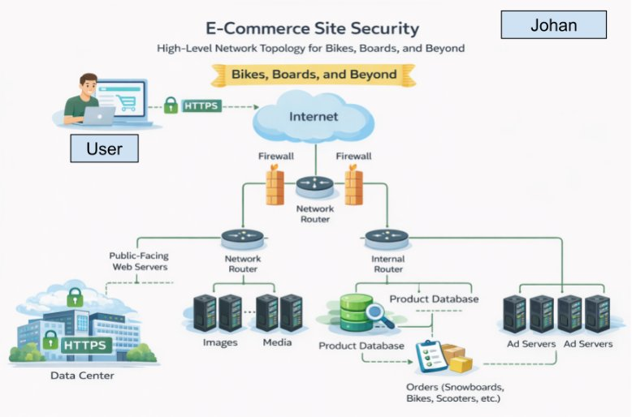

Dublin High School — Engineering Portfolio
Computer science student with a focus on cybersecurity, data, and building technology that solves real problems. Incoming student at the University of Illinois Urbana‑Champaign, studying Engineering.
Background
I am a senior at Dublin High School with a strong focus on computer science, cybersecurity, and data. From the moment I started writing code I became interested in one question: how can software solve real problems for real people? Whether it is building a website that helps hundreds of students navigate STEM programs, developing an inventory system adopted in a real office, or designing a network security architecture from the ground up, I approach every project with that question in mind.
My coursework includes AP Calculus AB, AP Environmental Sciences, AP Seminar, AP Computer Science A, AP Computer Science Principles, AP Macroeconomics, and AP Government, alongside Honors Chemistry and Honors Physics. I have completed dual-enrollment courses at Las Positas College, Saddleback College, and Foothill College, and contributed study guides now used by over 2,400 students through APStudy. As General Manager and Web Developer at Eureka Institute I built the organization's full website and helped organize a hackathon that raised $40K and engaged 300+ students.
This fall I will attend the University of Illinois Urbana-Champaign to study Engineering. My long-term goal is to work at a company like Apple or build my own startup at the intersection of sports and technology. I believe the most impactful products are built by people who understand both the logic of systems and the human needs those systems serve.
Professional
Coursework
Computer Science Essentials

CSE
Programmed a robot to navigate a 9-grid map using loops and two-dimensional lists. I was responsible for grids 2, 3, 7, and 9, writing precise navigation instructions for each path. The core challenge was learning how loop-based commands drive a robot through a grid without overstepping boundaries. My partner and I divided work clearly and completed all paths on time, deepening my understanding of iteration and 2D list logic.

CSE
Built an MIT App Inventor application that presents a structured sequence of survey questions to users and collects their responses. Our topic was chewing gum in class. I took a leadership role, programming the list-based question flow and user interaction using block-based code. I learned how to build functional mobile-app logic using string lists and sequential event handling in a block-based environment.
AP Computer Science Principles

AP CSP
Built a sports-themed Hangman game in Scratch where players guess basketball and NFL terms within a limited number of tries. I served as the driver, writing all core logic, while my partner navigated. I learned to manage list manipulation and build efficient user-input loops. The biggest challenge was debugging edge cases in the guessing logic, which we resolved by breaking the program into smaller, testable functions and communicating clearly throughout.

AP CSP
Created a Halloween-themed interactive school scene using Python functions and lists. The program accepted user input to generate animated scenes of DHS featuring ghosts, sound effects, and a working door. As driver, I implemented every function and met all requirements while my partner navigated. I learned how algorithms produce visual, user-driven outputs and how to structure modular, readable functions.
Cybersecurity

Cybersecurity
Identified and remediated two live server vulnerabilities in a simulated environment. I located an unnecessary SMTP mail service, researched its risks using the National Vulnerability Database, then disabled the SMTP Virtual Server in IIS 6.0 Manager to block unauthorized email transmission. I also reconfigured server error pages from verbose responses that exposed file paths to generic custom pages. Both fixes were documented and validated through live testing, applying the principle of least privilege throughout.

Cybersecurity
Designed a full network topology for a fictional e-commerce company ("Bikes, Boards, and Beyond"), mapping public-facing web servers, internal routers, product databases, and ad servers. I determined which data categories required the highest confidentiality, integrity, and availability, then compared my design against an Amazon-style reference architecture. Key takeaways: separate public and internal servers, restrict sensitive data to authorized users, and encrypt all internal traffic.
Exploration
During my time in high school, I have explored careers in technology and entrepreneurship through research, volunteer work, paid employment, and guest speaker events. My interest in computer science has been shaped not only by coursework but by real experiences that showed me what it looks like to build something meaningful with technology and to understand the people that technology is meant to serve.
My career research has consistently pointed me toward the intersection of data, systems, and human impact. Through the CA Colleges Interest Profiler and engineering career research in class, I identified that I am most drawn to roles like software engineer, data analyst, and product developer. These findings shaped my decision to pursue Engineering at UIUC and to complete dual enrollment coursework at Las Positas College, Saddleback College, and Foothill College ahead of schedule. Studying how statistical models and algorithms work together reinforced my goal of using data science to solve problems in sports, public health, and business.
My professional experiences have given me broad exposure across several fields. At Eureka Institute I served as General Manager and Web Developer, building the organization's full website in React, TypeScript, and Tailwind CSS, and co-organizing a hackathon that raised $40K and engaged 300+ students. At Bristol Hospice I contributed 60+ volunteer hours in administration, authored the internal newsletter, and conducted research analyzing hospice utilization data across California counties, presenting findings directly to leadership. I have also tutored students at Yang Fan Academy, worked as a cashier at Charleys Philly Steaks, and served as Media Intern at Mar Thoma Church, leading a team that grew weekly online viewership to 150+. Each experience reinforced that strong systems, clear communication, and consistency matter in every field.
Brian Ng delivered a session on omni-channel excellence as the foundation of modern business growth. He argued that a brand's success depends on treating the entire customer journey as one cohesive ecosystem rather than a series of isolated transactions. His central point was that data-driven decisions provide direction, but it is the intersection of creativity and strategy that transforms a business into a lasting legacy. He introduced the idea that true consumer-centric innovation starts with solving deep-seated human problems, and that reliability and strong unit economics follow naturally when that foundation is right.
What resonated most was his advice to "iterate like you're right but listen like you're wrong." He pushed us to become multilingual professionals — people who can move between a complex data model and a creative brand strategy session with equal confidence. He emphasized that technical proficiency means very little without a narrative that makes data compelling to a wider audience. His talk changed how I approach presenting my work: the best builders communicate the why alongside the how, and that shift has stayed with me since.